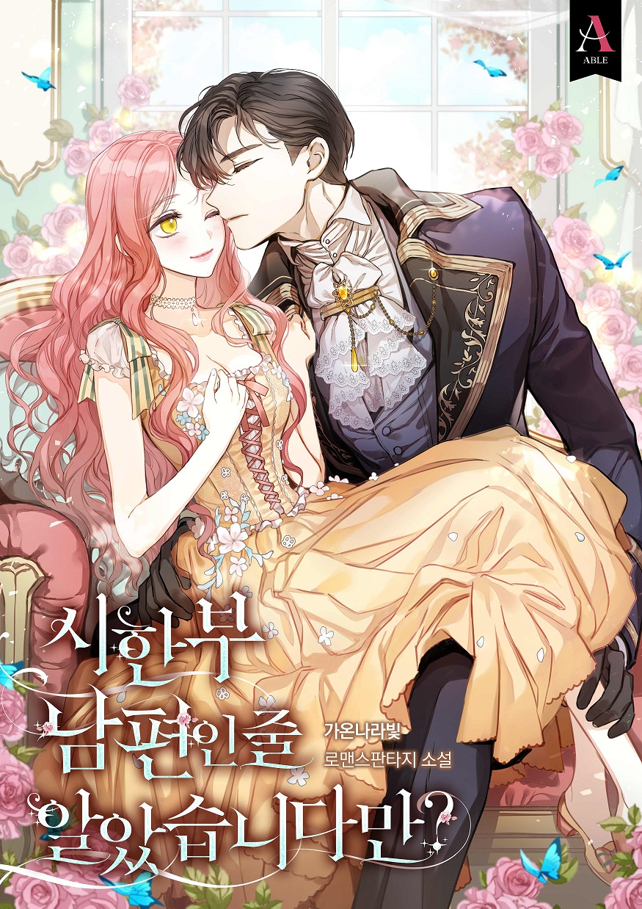
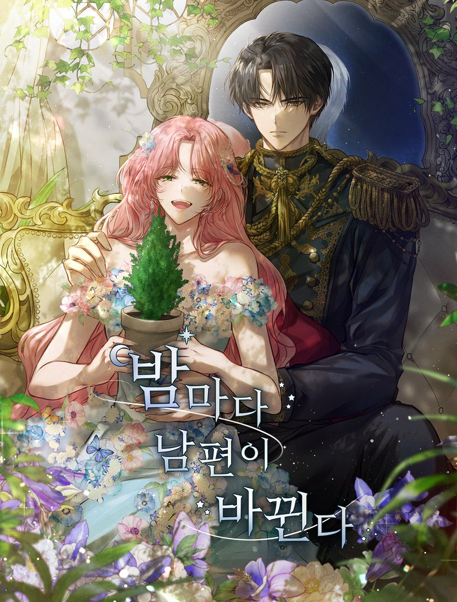
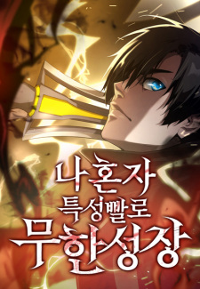
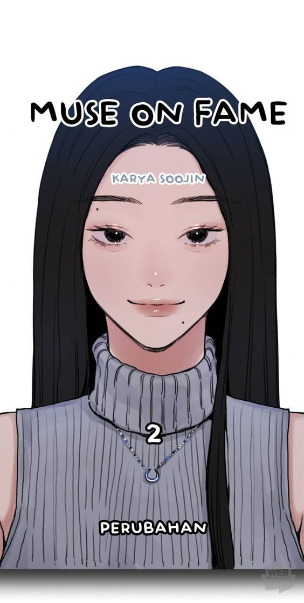
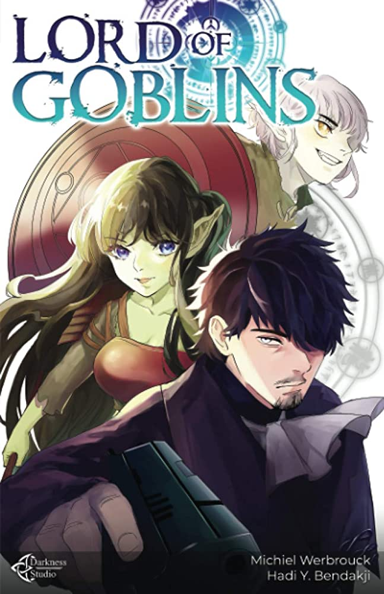

Trending Now
-
1

I Thought My Time Was Up!
Feeling a little under the weather, Lariette Blanche visits Doctor Zakascoff only to find out that she has an extremely rare congenital disease, and only three months left to live. Though devastated at first, Lariette decides to write up a bucket list of everything she wants to do before she dies. However, little did she know that the diagnosis was actually wrong! With so many changes implemented in her life already, what will Lariette do moving forward? Will she return to her previous life, or continue living the new one, full of adventures she had never imagined before?
-
2

My Husband Changes Every Night
Following the death of the World Tree, all that stands between the apocalypse and salvation is the Divine Maiden, prophesied to restore peace and prosperity. But never mind all that. Princess Teriella Rufeon has more pressing issues at hand: her family keeps trying to kill her, she’s got a secret healing power to keep under wraps, and she’s just found out she’s being sent off to marry the infamous tyrant Emperor Rivanfel von Leonharta! But there’s more to Rivanfel than meets the eye, and Teriella discovers she isn’t the only one with a grave secret to hide…
-
3

Boundless Ascension
Seong-yun Han was just a boy when his parents were killed by monsters unleashed during a mysterious calamity called the “Dungeon Break.” Seven years later, Seong-yun is devastated to find that his grinding efforts to become a Hunter, fierce warriors who seek out and destroy monsters, are entirely in vain, as his fighting attributes have not increased at all. Seong-yun’s world flips on a dime when he accepts an invitation to join the Tower of Trials, an otherworldly realm where challengers must overcome trials that pit them against monsters and humans alike.
-
4

Muse on Fame
“I’m an unknown actress who cleans houses as a side gig. Ironically, my name means fame.” Struggling actress Myeong stumbles upon a photo exhibition filled with photos of her younger self, when she was filled with hope. Can she become a star as this mysterious photographer’s muse?
-
5

Lord of Goblins
Corruption. Greed. War. Lev is no stranger to the evils of the world, as he has spent his entire life fighting the predatory system that ensnared the world's population and turned them into puppets for the leaders of humanity. But when he is assassinated, he finds himself in a new world — with different yet familiar evils. It's a similar road he must traverse, but this time he can do so with a lifetime of experience behind him.